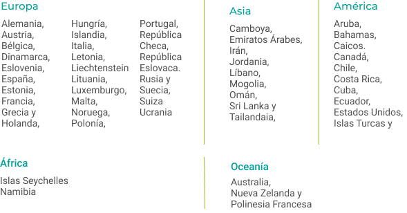

Preguntas frecuentes
¿En verdad necesito un seguro de gastos médicos internacional?
Una de las principales razones, es que existen mas de 40 paises que solicitan que cuentes con un seguro internacional de gastos médicos para otorgarte un visado ya sea de prácticas, de estudios o intercambios, todo esto como parte de el proceso de tramite de tu visa, te mostramos la lista de paises que lo solicitan para que consultes si es tu caso y lo ncesitas.
¿En qué países solicitan contar con un seguro como requisito de visado de estudios o trabajo?
¿Si no voy a estudiar o trabajar necesito un seguro de gastos médicos internacional?
Contar con un seguro te permitirá disfrutar al máximo de tu viaje, ya que en caso de sufrir un accidente o de enfermedad, no tendrás que preocuparte por los costos de la atención médica, los cuales suelen ser muy elevados en países extranjeros.
¿Cuáles son las ventajas de los seguros que ofrece Üben?
Nuestros seguros son aceptados por las embajadas para el trámite de visado, además de que son seguros sin deducibles, esto quiere decir que el seguro cubre el costo de los servicios médicos, cubriendo desde una gripe hasta una hospitalización.
¿En qué países tienen cobertura los seguros que ofrece Üben?
Nuestros seguros de gastos médicos ofrecen cobertura en todos los países del mundo, siempre y cuando el país de destino no se encuentre en guerra
¿Por qué debería comprar mi seguro de gastos médicos con Üben?
En Üben sabemos cuáles son los requisitos que un seguro debe tener para ser aceptado para el trámite de visado y te ofrecemos la mejor opción dependiendo del país que visites.
¿Cómo hago uso de mi seguro? Si necesito atención médica durante mi viaje,
Para poder utilizar tu seguro solo tienes que llamar a los números telefónicos que se encuentran en tu póliza y solicitar asistencia, se te programará una visita a un hospital o clínica y el seguro se encargará de los costos del servicio médico.
¿Cómo puedo adquirir un seguro con ustedes?
Solo tienes que llenar nuestro formulario con tus datos y nosotros nos pondremos en contacto contigo para darte más información sobre el costo del seguro y los pasos a seguir.